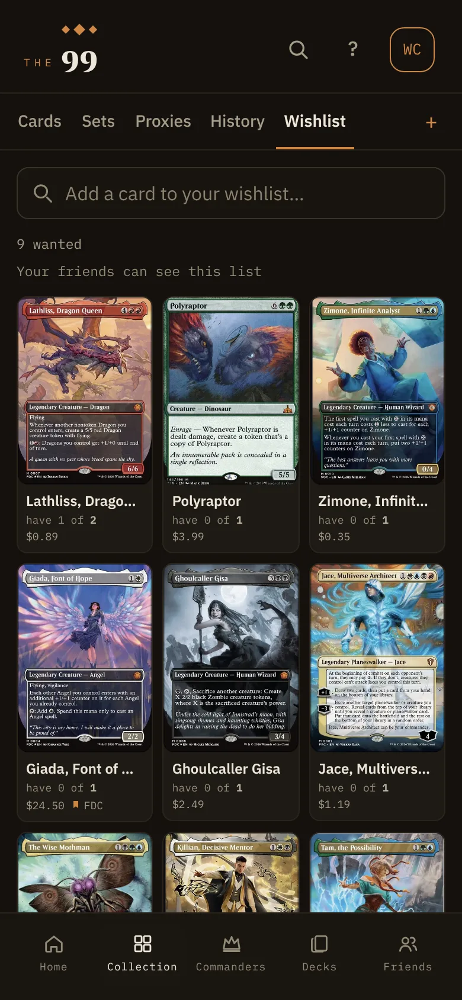
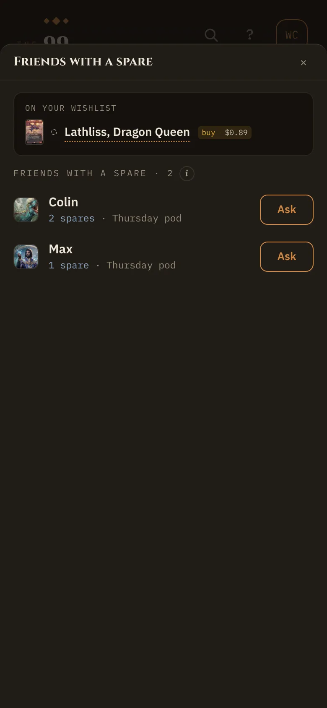
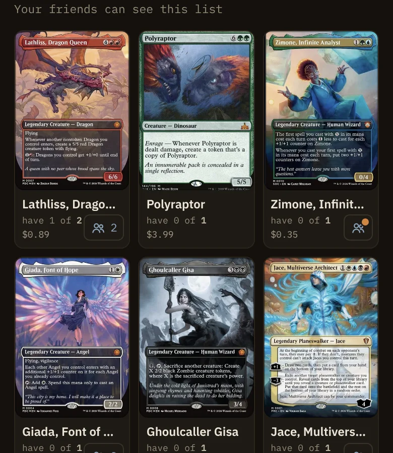
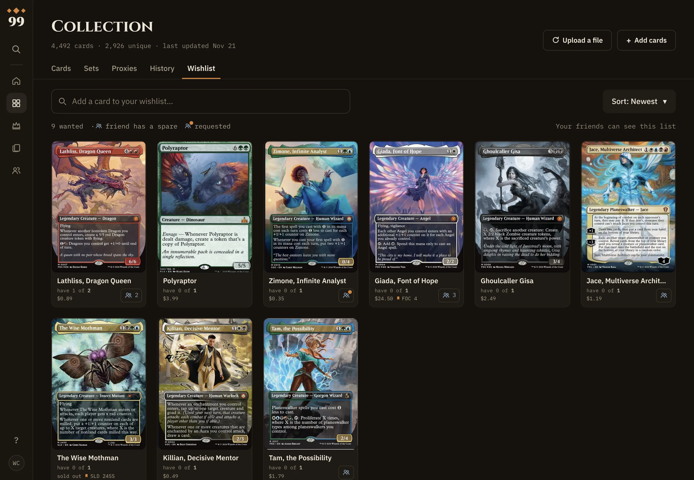
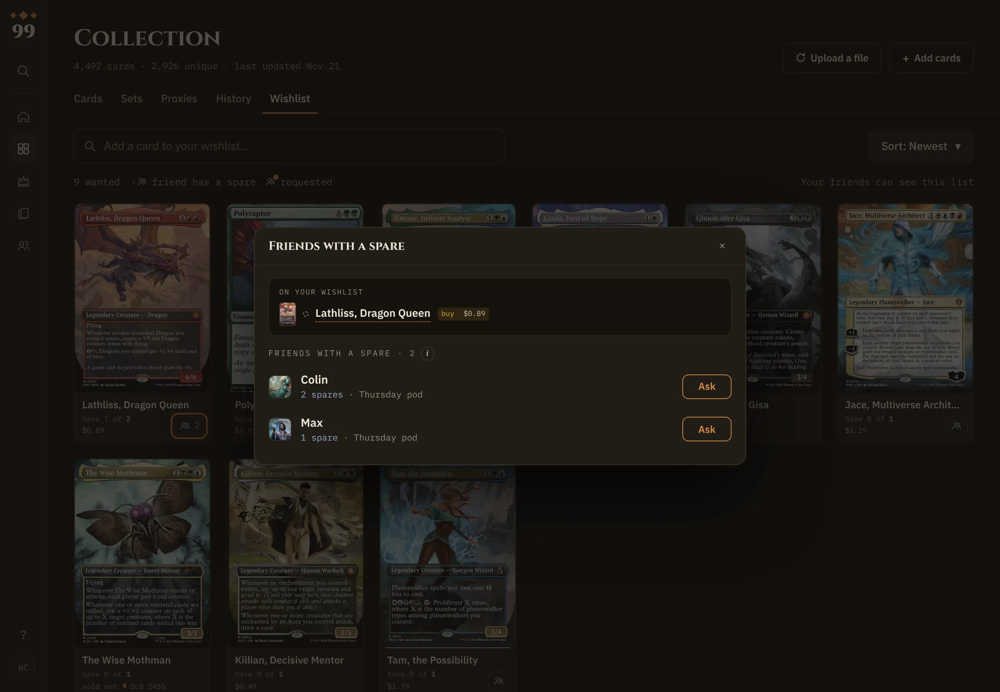
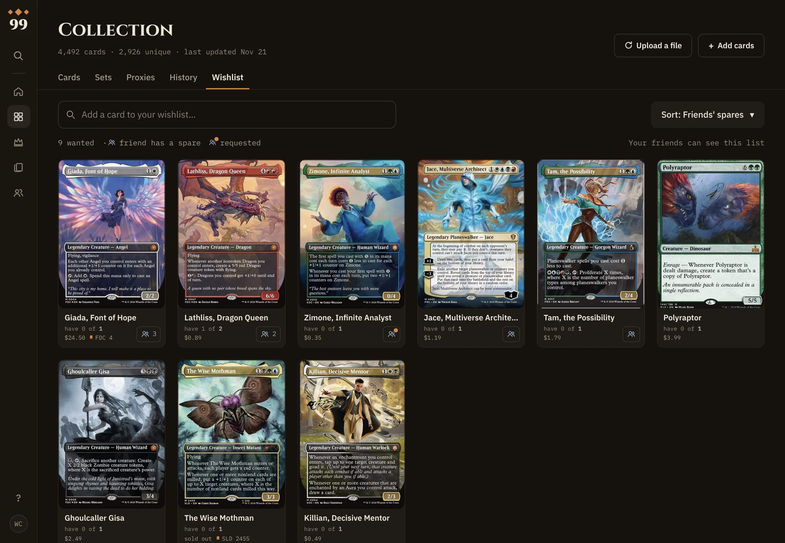

Nine wanted cards. Lathliss: Colin and Max have spares. Giada: three friends. Zimone: Colin, and you asked him (requested). Jace and Tam: one friend each. The rest: none. The press opens the shipped Friends with a spare modal with Ask.

W0 · Loading
The page as shipped: no presses, no key. Nothing reserves room.
W1 · Loaded
Presses on five tiles; the meta row gains the key: friend has a spare, requested.

W2 · Opened
Lathliss's press: Friends with a spare, on your wishlist, Colin and Max with Ask.

W3 · Close up
2 friends · none · 1 friend, requested. The caption lines make room only on a tile with a press.
D1 · Loading
Shipped tiles, Sort: Newest.

D2 · Loaded
The same press at md, 8px in from the caption's corner.

D3 · Opened
The shipped 640 modal over the tab; the tile's press is ringed while it is open.

D4 · Sort: Friends' spares
Giada (3), Lathliss (2), then one friend each, then the rest, newest first inside each.